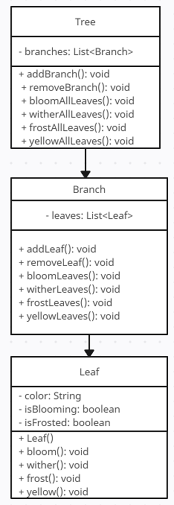
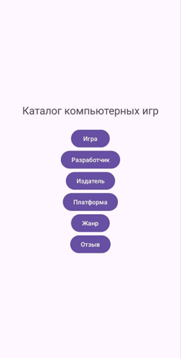

Цель учебной практики
- 1. Выполнить поставленный задачи также укрепить и повторить свои знания в изучаемых дисциплинах.
- 2. Разработать Автоматизированную информационную систему (АИС), которая была предоставленная преподавателям практики.
- 3. Провести тестирования готового продукта.
- 4. Разработать техническое задания.
- 5. Составить различные диаграммы.
- 6. Разработать сайт.
- 7. Разработать руководства пользователя.
Этапы практики
Этап 1: выполнение 10 задач первой недели
Задача 1
Найти число локальных минимумов. (Соседями элемента матрицы назовем элементы, имеющие с ним общую сторону или угол. Элемент матрицы называется локальным минимумом, если он строго меньше всех своих соседей.)
Блок-схема задачи 1
Результат программы 1
Задача 2
Реализовать методы сложения, вычитания, умножения и деления объектов (для тех классов, объекты которых могут поддерживать арифметические действия) Определить класс Интервал с учетом включения/невключения концов. Создать методы по определению пересечения и объединения интервалов, причем интервалы, не имеющие общих точек, пересекаться/объединятся не могут. Объявить массив/список/множество и n интервалов и определить расстояние между самыми удаленными концами.
Диаграмма классов задачи 2
Результат программы 2
Задача 3
Создать объект класса Дерево, используя классы Лист, Ветка. Методы: зацвести, опасть листьям, покрыться инеем, пожелтеть листьям.
Диаграмма классов задачи 3

Результат программы 3
Задача 4
Создать класс Cinema с внутренним классом, с помощью объектов которого можно хранить информацию об адресах кинотеатров, фильмах и времени начала сеансов.
Диаграмма классов задачи 4
Результат программы 4
Задача 5
В тексте найти первую подстроку максимальной длины, не содержащую букв.
Блок-схема задачи 5
Результат программы 3
Задача 6
Выполнить задания на основе задачи № 3, контролируя состояние потоков ввода/вывода. При возникновении ошибок, связанных с корректностью выполнения математических операций, генерировать и обрабатывать исключительные ситуации. Предусмотреть обработку исключений, возникающих при нехватке памяти, отсутствии требуемой записи (объекта) в файле, недопустимом значении поля и т. д. Выполнить задания из задачи № 3, реализуя собственные обработчики исключений и исключения ввода/вывода.
Результат программы 7
Задача 7
Составить программу получения на экране рисунков.
Диаграмма классов задачи 3
Результат программы 3
Задача 8
Составить описание объектного типа TMatr, обеспечивающего размещение матрицы произвольного размера, предусмотрев при этом возможность изменения числа строк и столбцов, а также вывода на экран подматрицы любого размера и всей матрицы
Диаграмма классов задачи 8
Результат программы 8
Задача 9
Итальянская игра «Математико»
Результат программы 9
Меню выбора зданий 7, 8, 9
Задача 10.1
Индивидуальный вариант: N DQ ? ; число без знака Не используя арифметические команды, реализовать оператор (1 вариант) N := N * 2 Решение должно содержать не более трёх команд.
Результат программы Задачи 10.1
Задача 10.2
Индивидуальный вариант: 1 вариант: Реализовать процедуру Padd(x,a), которая реализует оператор x:=x+a. Передача параметров в стеке, стандартные соглашения о связях.

Результат программы Задачи 10.2
Этап 2: Разработка АИС "Каталог компьютерных игр"
2.1 ER-диаграмма, диаграмма классов, диаграмма состояния.
ER диаграмма
Диаграмма классов
Диаграмма состояния
Введение
1.1 Наименование системы: Система управления Каталогом компьютерных игр
1.2 Основание для разработки: Анализ предметной области управления каталог компьютерных игр
2 Цель разработки
Целью разработки системы является создание автоматизированной программы для управления данными играми, разработчиками, издателями и жанрах. Это позволит улучшить обработку данных, управление клиентами и анализ финансовых показателей.
3 Область применения
Система будет использоваться для управления данными каталога, обработки информации о продажах, управления ассортиментом и отслеживания финансовых показателей, что способствует более эффективному обслуживанию клиентов и оптимизации работы.
4 Требования к системе
4.1 Функциональные требования:
• Управление данными игр (создание, чтение, редактирование, поиск и удаление записей)
• Управление данными разработчиков (создание, чтение, редактирование, поиск и удаление записей)
• Управление данными издателей (создание, чтение, редактирование, поиск и удаление записей)
• Управление данными жанров (создание, чтение, редактирование, поиск и удаление записей)
• Управление данными отзывов (создание, чтение, редактирование, поиск и удаление записей)
• Управление данными платформ (создание, чтение, редактирование, поиск и удаление записей)
4.2 Нефункциональные требования:
• Интерфейс должен быть интуитивно понятным и удобным для пользователей
• Система должна обеспечивать защиту данных и безопасную аутентификацию пользователей
• Высокая скорость обработки запросов к базе данных
5 Требования к надежности
5.1 Защита данных: система должна обеспечивать резервное копирование данных и защиту от несанкционированного доступа.
5.2 Отказоустойчивость: система должна корректно обрабатывать ошибки и не прерывать работу при сбоях.
6 Условия эксплуатации
Система должна работать на Windows и быть доступна через приложение, написанное на Java, с использованием Swing для графического интерфейса и SQLite для управления базой данных.
7 Требования к программному обеспечению
7.1 Язык программирования: Java
7.2 Среда разработки: IntelliJ IDEA
7.3 Среда выполнения: Windows 11
7.4 База данных: SQLite
8 Требования к документированию
К системе должны быть предоставлены следующие документы:
• Руководство пользователя
• Руководство администратора
• Техническое руководство по установке и настройке системы
9 Этапы разработки
9.1 Анализ требований и подготовка технического задания
9.2 Проектирование системы и базы данных
9.3 Разработка интерфейса и функциональности системы
9.4 Тестирование системы и исправление ошибок
9.5 Внедрение и обучение персонала
10 Порядок контроля и приемки
10.1 Приемка: система будет считаться принятой, если она соответствует всем требованиям ТЗ и успешно проходит все этапы тестирования.
10.2 Контроль качества: регулярная проверка и тестирование системы перед внедрением.
2. Основные функции
2.1 Добавление новой игры
Для добавления новой игры выполните следующие действия:
- Нажмите кнопку "Добавить" в меню игры.
- Следуя инструкции.
- Нажмите кнопку "Сохранить", чтобы добавить пользователя в систему.
Добавление игры
2.2 Просмотр разработчиков
Для просмотра списка разработчиков выполните следующие действия:
- Нажмите кнопку "разработчиков" в главном меню.
- Система выполнит запрос и отобразит список разработчиков.
Просмотр разработчиков
2.3 Просмотр Издателей
Для просмотра издателей выполните следующие шаги:
- Нажмите кнопку "Издатели" в главном меню.
- Система выполнит запрос и отобразит список издатели.
Просмотр Издателей
2.4 Просмотр платформы
Чтобы просмотреть платформу:
- Нажмите кнопку "Платформы ".
- Система выполнит запрос и отобразит список Платформ.
Просмотр платформы
2.5 Просмотр жанров
Для просмотра жанров:
- Нажмите кнопку " Жанры".
- Система выполнит запрос и отобразит список жанров.
Просмотр жанров
2.6 Просмотр отзывов
- Нажмите кнопку"Отзывы".
- Система выполнит запрос и отобразит список отзывов.
Просмотр отзывов
Реализация АИС в 1С
Этап 3: Разработка мобильного приложения и сайта
Главный экран
Страница Игр
Список Разработчиков
Список Издателей
Список Платформ
Список Жанров
Список Отзывов
Руководство пользователя:
1. Общие сведения
1.1 Назначение
Приложение «Каталог компьютерных игр» предназначено для пользователей, желающих быть в курсе событий в мире компьютерных игр. С помощью приложения вы можете:
• Посмотреть информацию об Играх: найдите нужную игру, а также жанр и дату выхода.
• Узнать о Платформах: посмотреть название платформы и производителя. \
• Узнать об разработчиках: посмотреть ФИО актера, а также его дату рождения.
• Узнать об Издателях: посмотреть название издателя и дату основания.
• Узнать о Жанрах: посмотреть название жанра и его описание.
• Посмотреть отзывы: посмотреть все отзывы (имя автора, оценка, дата отзыва).
1.2 Требования к пользователю
Для использования приложения пользователю требуется:
• Смартфон или планшет с операционной системой Android.
• Доступ в интернет.
2. Описание приложения
2.1 Основные функции
Приложение «Каталог компьютерных игр» предоставляет следующие функции просмотра информации: Подробное описание игр, разработчиков, издателей, жанров и отзывов.
2.2 Интерфейс
Приложение «Каталог компьютерных игр» имеет простой и интуитивно понятный интерфейс. Основной экран приложения содержит список категорий: Игры, разработчики, Издатели, Отзывы, Жанры.
3. Инструкция по эксплуатации
3.1 Запуск приложения
Для запуска приложения «Каталог компьютерных игр» необходимо открыть его на вашем устройстве.
3.2 Выбор категории
На главном экране приложения выберите категорию, информацию о которой вы хотите получить.
3.3 Просмотр информации
После выбора категории вам будет представлен список элементов этой категории. Прочтите информацию о нем.
Заключение
В ходе прохождения учебной практики по программированию удалось достичь поставленных целей и закрепить знания по ключевым дисциплинам. В результате были разработаны программные модули, мобильные приложения, произведено тестирование и поддержка кода, освоены основы программирования на платформе 1С, а также реализованы задачи по системному программированию. Все задачи выполнены в соответствии с требованиями, и полученные результаты отражены на созданном сайте, предназначенном для демонстрации выполненной работы. Практика позволила не только углубить теоретические знания, но и приобрести практический опыт, необходимый для дальнейшего профессионального развития в сфере программирования.